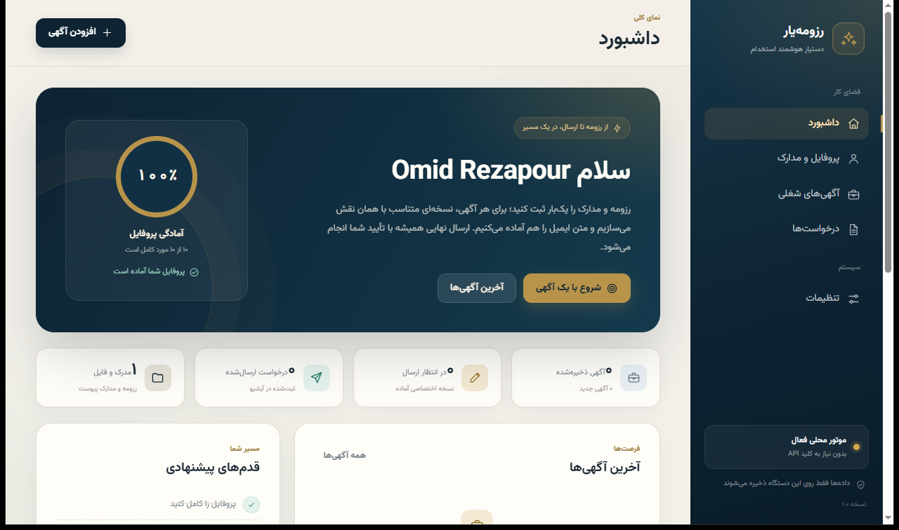

Profile and CV parsing
Structured profile fields with a manual edit path for every parsed value.
Local-first · Work in progress
ResumeYar reads your CV once, scores every posting you throw at it, writes a CV and a cover letter for that specific job, and tracks what you already sent. No account, no cloud, no data leaving the computer.
رزومهیار: دستیار جستوجوی کار با رابط فارسی. پروفایل و رزومه در یک جا میماند و همه چیز روی سیستم خودتان ذخیره میشود.

Upload a PDF, DOCX or TXT CV and the parser fills in experiences, education, skills and links. Everything it gets wrong can be edited by hand.
Paste a URL or the raw text. ResumeYar extracts the title, company, requirements and language, then scores the match and lists the gaps.
One click produces a CV PDF and a cover letter aimed at that posting, packaged in a ZIP. The application lands in the tracker with its status and notes.
Structured profile fields with a manual edit path for every parsed value.
Keyword and skill coverage between your profile and the posting, with the missing items stated plainly.
CV and cover letter per posting, generated to PDF with correct Persian shaping and bidirectional text.
Stages, status history, notes and generated files for every application in one board.
Persian and English content in one profile. The interface switches between Persian, right to left, and English, left to right.
A native Windows window around the same app, with an executable and an installer script.
Profile, CVs, generated files and the database live in a single data/ folder
next to the app. The only times anything goes out is when you enable email sending
with your own SMTP account, or turn on the optional AI rewriting with your own API key.
data/, git-ignoredPython 3.11 or newer on Windows, Linux or macOS.
# create a virtual environment and install
python -m venv .venv
.venv\Scripts\activate
pip install -r requirements.txt
# start the app on http://127.0.0.1:5533
python app.pyFor the native window instead of a browser tab:
pip install -r desktop/requirements_desktop.txt
python desktop/launcher.py
Windows users can also build Resumeyar.exe and an installer with
desktop\build_windows.bat. Details in the repository.
v0.3, active development. Working: profile, parsing, match scoring, tailored PDFs, tracker, bilingual interface, desktop build. Not started: automated tests, browsers other than Chrome. Interfaces and database schema may change between versions.